Kilpailukutsu Moe SkiTour Talma 28.3.2026
Tervetuloa Freestyleseura Moebius ry:n Moe SkiTour-kiertueen päätöskilpailuun Talma Ski:hin lauantaina 28.3.2026 kello 10 alkaen. Vaikka kausi alkaa olla lopuillaan, järjestetään kilpailu, kunhan hissit pyörivät.
Kilpailu
Tämänhetkinen suunnitelma on pitää parhaan tempun kisa yhdestä hyppyristä ja yhdestä reilistä. Talmassa kilpailu lasketaan Groms, Rookies ja Open-sarjoissa kahdessa osassa:
Kaikki luokat lasketaan etuparkissa.
Laskija voi valita suorituspaikat oman taitotasonsa mukaan. Suorituspaikkoja ja hyppyreitä löytyy kaiken tasoisille. Käytettävä hyppyri ja reilit vahvistetaan viimeistään kilpailijakokouksessa.
Luokat
Tällä kaudella kilpaillaan lajiliiton uuden ikäryhmäjaon mukaan. Ikäryhmät ovat yhdenmukaisia Fearless Finns Freestyle Tourin kanssa. Kids tytöt ja -pojat laskevat samassa luokassa. Muissa ikäryhmissä on tyttöjen ja poikien luokat.
Kids — 2014 syntyneet ja nuoremmat
Tässä luokassa ei ole rankingia, vaan kaikki saavat tuomareilta kirjallisen palautteen suorituksistaan.
Halutessaan Kids-ikäinen saa kilpailla Groms-luokassa. Kids-luokka lasketaan pienemmässä parkissa kuin muut luokat.
Groms — syntymävuodet 2013 – 2011
Halutessaan nuorempi kuin 2013 syntynyt saa kilpailla tässä luokassa. Fearless Finns -kiertueella 2013 tai myöhemmin syntyneen joka osallistuu Groms-luokkaan on kilpailtava koko kausi ko. luokassa. Moen kisoissa nuoremmat voivat ilmoittautua kisakohtaisesti.
Rookie — syntymävuodet 2010 – 2008
Open — syntymävuosi 2010 tai aiemmin
Tässä luokassa kilpailevat kaikki FIS-koodilaskijat, jos kilpailu on FIS-kilpailu.
2010–2008 syntyneillä on mahdollisuus kilpailla myös Rookie-luokassa, mutta silloin he eivät saa FIS-pisteitä.
Ilmoittautuminen
Ilmoittautuminen keskiviikkoon 25.3.2026 mennessä tällä nettilomakkeella
.
Kilpailu on ennakkoon ilmoittautuneille Freestyleseura Moebiusta edustaville seuran jäsenille ilmainen.
Seuran ulkopuolisille ennakkoilmoittautumismaksu on 15 €. Jälki-ilmoittautuminen paikan päällä maksaa 25€.
Ilmoittautumismaksut maksetaan Freestyleseura Moebius ry:n tilille
FI09 8000 9710 2213 95
Viestiin “SKITOUR1” tai "KOKO SKITOUR" ja ilmoittautujan nimi.
Moe SkiTourin kisoihin voivat osallistua kaikki lajia harrastavat. Osallistuminen ei edellytä seurajäsenyyttä. Tarvitset välineet freestylehiihtoa varten. Kypärä ja selkäpanssari ovat pakollisia. Sauvat eivät ole Moen omissa kisoissa pakolliset, mutta ilman sauvoja laskien saa vähemmän pisteitä.
Tarvitset myös kilpailutilanteen ja parkkilaskun kattavan vakuutuksen, kuten Ski Sport Finlandin Skipassin tai kilpailulisenssin ohessa myytävän Sporttiturva-vakuutuksen. Talman kilpailuun et tarvitse lisenssiä.
Lisätietoa lisenssivaihtoehdoista Skisport Finlandin sivuilta.
Aikataulusuunnitelma
9.30 numeroliivien jako mutterissa kahvilan terassin vieressä,
10.00 hissit aukeavat.
Vapaat harjoitukset
10.30 Kilpailijakokous etuparkin hissien ala-asemalla
10.45 Hypyt
Lounas: suosituksena keittolounas, joka on nopeasti tarjolla.
13.00 Reilit
15.00 Palkintojenjako etuparkien hissien ala-asemalla
Talkoot
Tarvitsemme kilpailuiden järjestämiseen myös paljon talkooväkeä. Talkooväen ilmoittautuminen talkooväen ilmoittautumislomakkeella
.
Hissiliput
Hiihtokeskuksen lipunmyynnistä saat päivälipun numeroliiviä vastaan alennushinnalla.
Hiihtokeskuksessa on käytössä Axess-etäkortti.
Yhteystiedot
Heikki Rauhala, 0407692277, info@moebius.fi, moebius.fi, @moebiusfreestyle, facebook.com/moebiusfreestyle
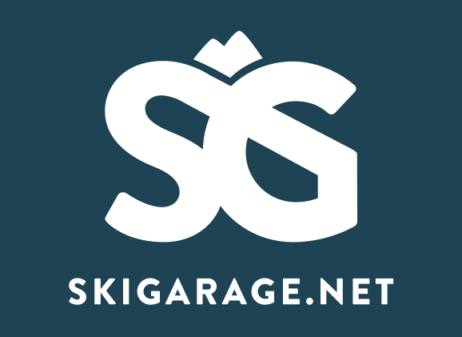
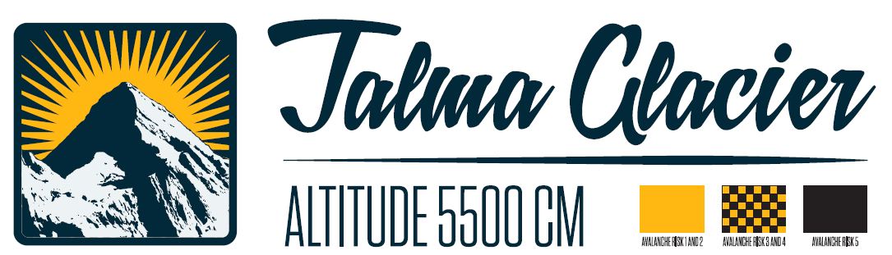
Kokonaiskilpailun tulokset ennen Talman viimeistä kisaa
Rookie
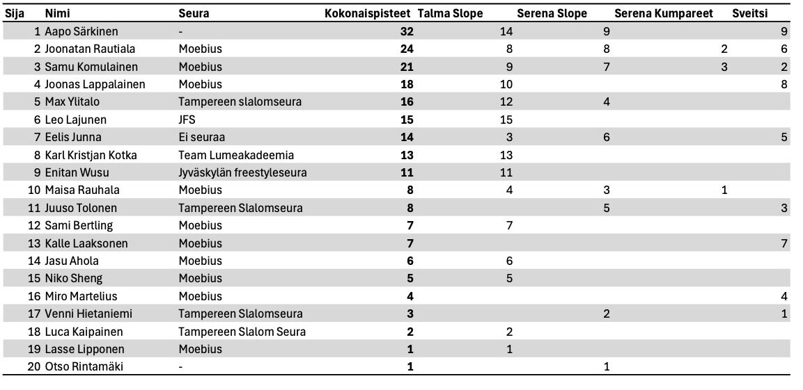
Groms
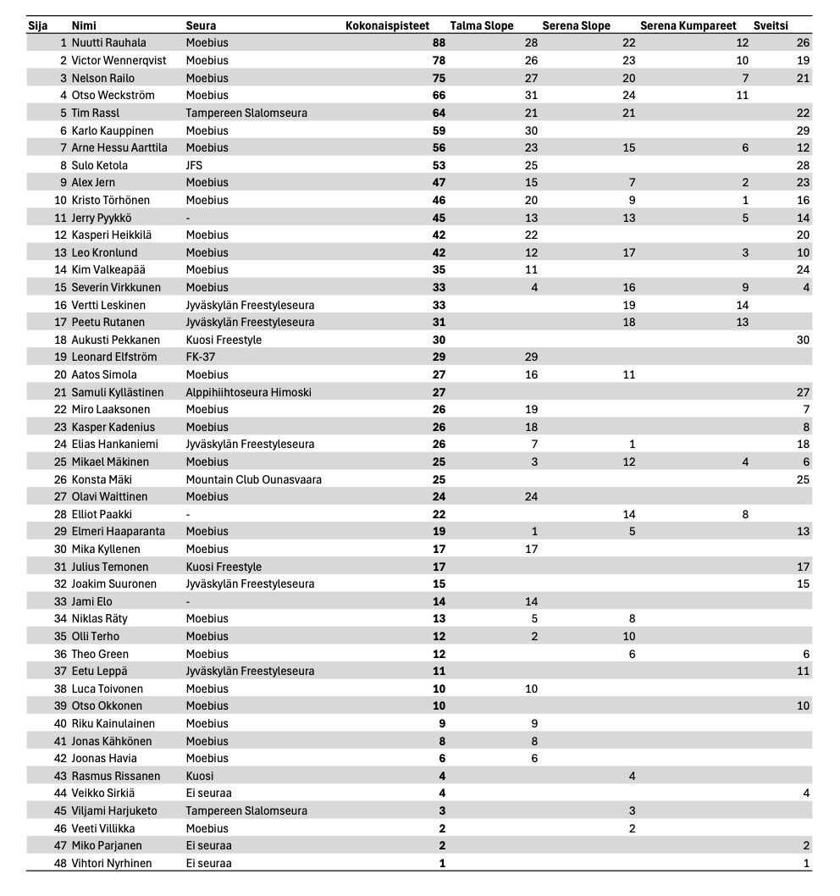
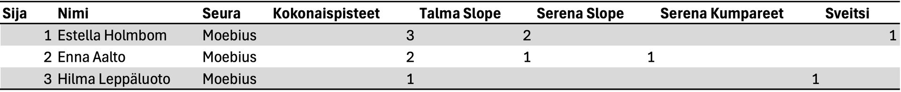
Kids
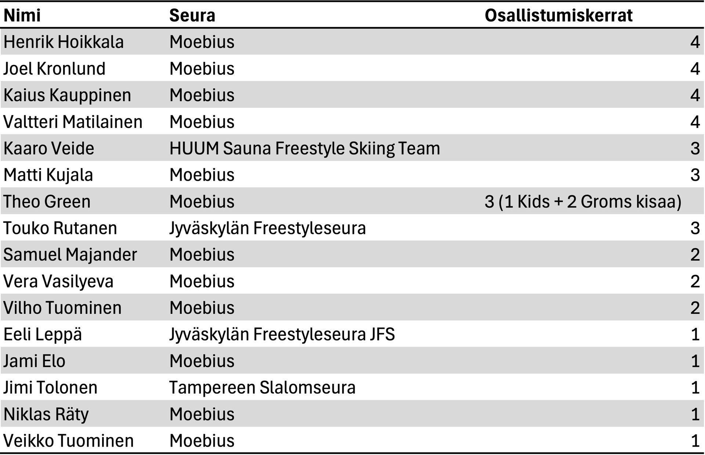
Tulokset Sveitsin Hiihtokeskus 7.3.2026
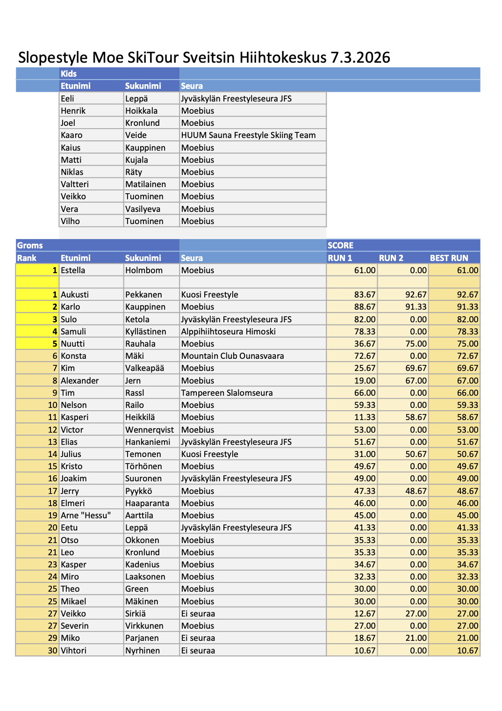
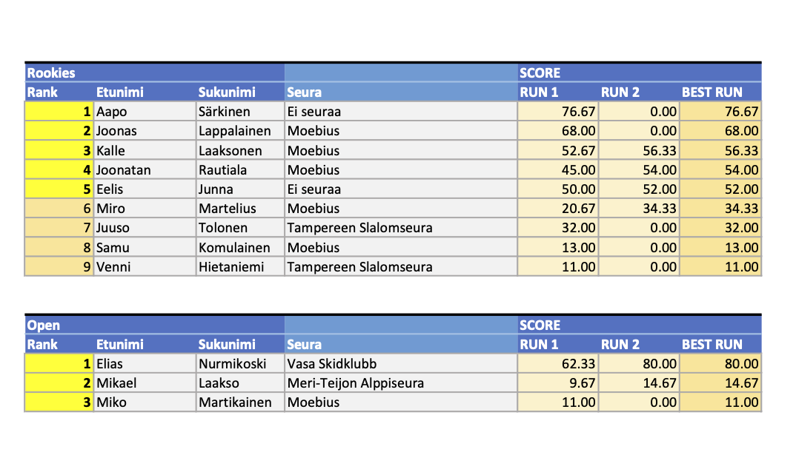
Fearless Finns ja Moe SkiTour Sveitsin hiihtokeskus 7.3.2026
Tervetuloa Moen järjestämään Fearless Finns Slopestyle kilpailuun Sveitsin hiihtokeskuksessa!
Kilpailu on osa Fearless Finns Freeski touria ja Moe SkiTouria. Kilpailu lasketaan hyppyrilinjassa, johon rakennetaan reilit ja hypyt samaan laskuun.
Luokat
Tällä kaudella kilpaillaan lajiliiton uuden ikäryhmäjaon mukaan. Ikäryhmät ovat yhdenmukaiset Fearless Finns Freestyle tourin kanssa. Kids tytöt ja -pojat laskevat samassa luokassa, muissa ikäryhmissä on tyttöjen ja poikien luokat.
Kids — 2014 syntyneet ja nuoremmat
Tässä luokassa ei rankingia vaan kaikki saavat tuomareilta kirjallisen palautteen suorituksistaan.
Halutessaan Kids ikäinen saa kilpailla Groms luokassa. Kids luokka lasketaan pienemmässä parkissa kuin muut luokat.
Groms — syntymävuodet 2013 – 2011
Halutessaan nuorempi kuin 2013 syntynyt saa kilpailla tässä luokassa. Fearless Finns kiertueella 2013 tai myöhemmin syntyneen joka osallistuu Groms sarjaan on kilpailtava koko kausi ko. luokassa. Moen kisoissa nuoremmat voivat ilmoittautua kisakohtaisesti.
Rookie — syntymävuodet 2010 – 2008
Open — syntymävuosi 2010 tai aiemmin
Tässä luokassa kilpailevat kaikki FIS-koodi laskijat, jos kilpailu on FIS kilpailu.
2010-2008 syntyneillä on mahdollisuus kilpailla myös Rookie luokassa, mutta silloin he eivät saa FIS
pisteitä.
Huomattavaa myös että Fearless Finns Freeski tourin kisoissa sauvat ovat pakollisia Rookie ja Pro -sarjoissa. Ilman sauvoja tehdyt suoritukset pisteytetään kaatuneiksi.
Ilmoittautuminen
Ilmoittautumiset keskiviikkoon 4.3.2026 mennessä tällä lomakkeella.
Kilpailu on ennakkoon ilmoittautuneille Moebiusta edustaville Freestyleseura Moebius ry:n jäsenille ilmainen.
Tällä kaudella seuran ulkopuolisille on tarjolla kaikki neljä kilpailua kattava SkiTour-pakettihinta 40 €, tai kisakohtainen ennakkoilmoittautumismaksu 15 €. Jälki-ilmoittautuminen paikan päällä maksaa 25€.
Ilmoittautumismaksut maksetaan Freestyleseura Moebius ry:n tilille
FI09 8000 9710 2213 95
Viestiin “SKITOUR3” tai "KOKO SKITOUR" ja ilmoittautujan nimi.
Fearless Finns kilpailukiertue on kansallinen kilpailukiertue ja osallistuakseen laskijalla on oltava voimassa oleva kilpailulisenssi tai Skipassi.
Lue lisää lisenssivaihtoehdoista ja Skipassista Skisport Finlandin sivuilta.
Aikataulusuunnitelma
9.40 Lipunmyynti ja hissit aukeavat, numeroliivien jako kilpailutoimistossa hiihtokoulun mökissä
9.55 Kilpailijakokous molemmat lajit hiihtokoulun mökin edessä
10.00 Vapaat harjoitukset
11.20 Slopestyle Kids, Rookie ja Open, 2 laskua, paras tulos jää voimaan
Lounas Rinneravintolassa nopea ja ravitseva keittolounas
13.00 Slopestyle Groms, 2 laskua, paras tulos jää voimaan
15.30 Palkintojenjako rinneravintolan edessä
Tiedottaminen ja tulospalvelu
WhatsApp-ryhmä Fearless Freeski 2026. Viralliset tulokset SSF:n nettisivuilla. Tulokset julkaistaan myös tällä nettisivulla.
Talkoot
Tarvitsemme kilpailuiden järjestämiseen myös paljon talkooväkeä, talkooväen ilmoittautuminen talkooväen ilmoittautumislomakkeella
.
Hissiliput
Sveitsin hiihtokeskuksen lipunmyynnistä saat päivälipun numeroliiviä vastaan alennushintaan.
Hiihtokeskuksessa on käytössä Axess-etäkortti.
Yhteystiedot
Heikki Rauhala, 0407692277, info@moebius.fi, moebius.fi, @moebiusfreestyle
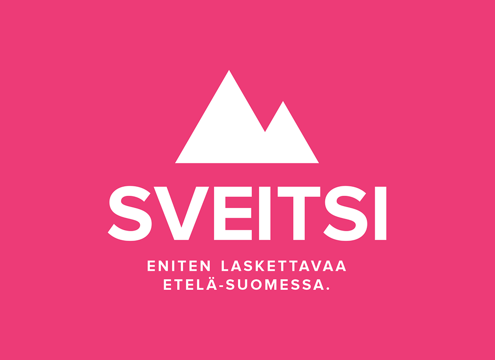
Tulokset Moe SkiTour Serena 7.2.2026
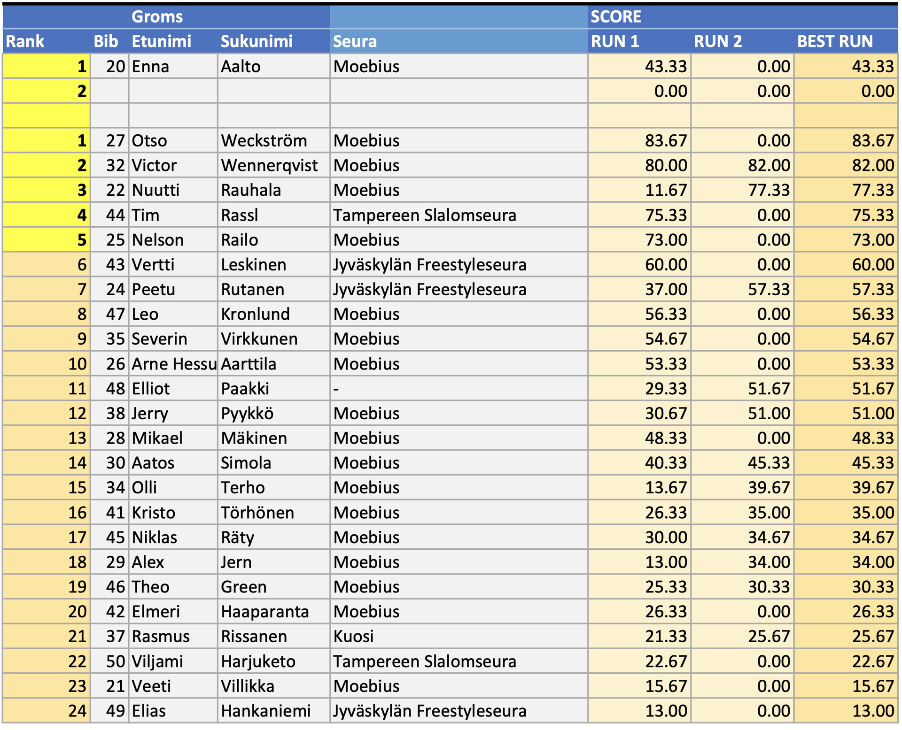
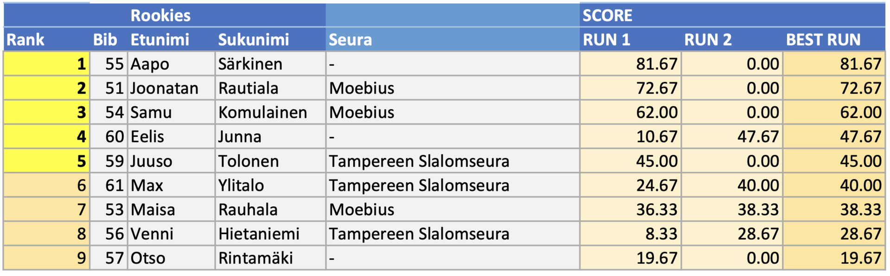
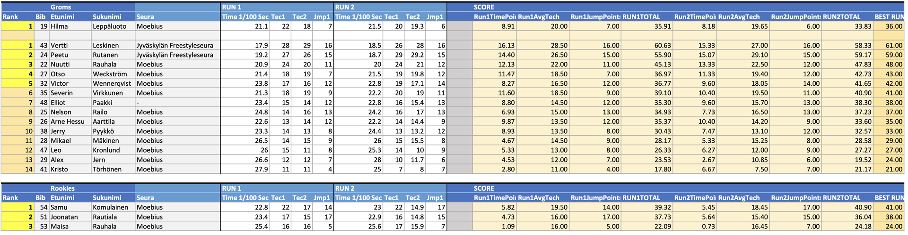
SkiTour Serena 7.2.2026
Tervetuloa Freestyleseura Moebius ry:n Moe SkiTour -kiertueen kolmanteen kilpailuun Serenaan lauantaina 7.2.2026 kello 10.00 alkaen!
Kilpailu
Serenassa kilpaillaan kaksi erillistä lajia: Slopestyle ja Moguls. Molempiin lajeihin ilmoittaudutaan samalla lomakkeella jossa valitaan lajit. Kannustamme kaikkia kilpailijoita osallistumaan molempiin lajeihin, molemmat ovat matalan kynnyksen kisoja! Tulokset lajeista ovat erilliset. Molemmat lajit lasketaan myös omina kisoinaan osaksi Moe SkiTourin kokonaiskilpailua.
Slopestyle
Päivä aloitetaan Slopestylekilpailulla. Kidsit laskevat ensin, jonka jälkeen Groms kokonaisuutena, ja viimeisenä Rookies ja open kokonaisuutena. Kidsit laskevat pikkulinjassa, muut pyritään laskemaan isommassa linjassa jossa on ensin reilit ja lopussa hyppyri. Slopestylessä lasketaan kaksi laskua joista parempi jää voimaan.
Kumpareet
Slopestylen jälkeen järjestetään kumparekilpailu lumitilanteen salliessa. Kumpareissa lasketaan kaksi laskua, parempi jää voimaan.
Kumpareissa lasketaan kaksi laskua ja osanottajamäärästä riippuen luokat erikseen tai yhdessä.
Luokat
Tällä kaudella kilpaillaan lajiliiton uuden ikäryhmäjaon mukaan. Ikäryhmät ovat yhdenmukaiset Fearless Finns Freestyle tourin kanssa. Kids tytöt ja -pojat laskevat samassa luokassa, muissa ikäryhmissä on tyttöjen ja poikien luokat.
Kids — 2014 syntyneet ja nuoremmat
Tässä luokassa ei rankingia vaan kaikki saavat tuomareilta kirjallisen palautteen suorituksistaan.
Halutessaan Kids ikäinen saa kilpailla Groms luokassa. Kids luokka lasketaan pienemmässä parkissa kuin muut luokat.
Groms — syntymävuodet 2013 – 2011
Halutessaan nuorempi kuin 2013 syntynyt saa kilpailla tässä luokassa. Fearless Finns kiertueella 2013 tai myöhemmin syntyneen joka osallistuu Groms sarjaan on kilpailtava koko kausi ko. luokassa. Moen kisoissa nuoremmat voivat ilmoittautua kisakohtaisesti.
Rookie — syntymävuodet 2010 – 2008
Open — syntymävuosi 2010 tai aiemmin
Tässä luokassa kilpailevat kaikki FIS-koodi laskijat, jos kilpailu on FIS kilpailu.
2010-2008 syntyneillä on mahdollisuus kilpailla myös Rookie luokassa, mutta silloin he eivät saa FIS
pisteitä.
Ilmoittautuminen
Ilmoittautumiset keskiviikkoon 4.2.2026 mennessä tällä nettilomakkeella
.
Kilpailu on ennakkoon ilmoittautuneille Moebiusta edustaville Freestyleseura Moebius ry:n jäsenille ilmainen.
Tällä kaudella seuran ulkopuolisille on tarjolla kaikki neljä kilpailua kattava SkiTour-pakettihinta 40 €, tai kisakohtainen ennakkoilmoittautumismaksu 15 €. Jälki-ilmoittautuminen paikan päällä maksaa 25€.
Ilmoittautumismaksut maksetaan Freestyleseura Moebius ry:n tilille
FI09 8000 9710 2213 95
Viestiin “SKITOUR1” tai "KOKO SKITOUR" ja ilmoittautujan nimi.
Moe SkiTourin kisoihin voivat osallistua kaikki lajia harrastavat, osallistuminen ei edellytä seurajäsenyyttä. Tarvitset välineet freestylehiihtoa varten. Kypärä ja selkäpanssari ovat pakollisia. Sauvat eivät ole Moen omissa kisoissa pakolliset, mutta ilman sauvoja laskien saa vähemmän pisteitä.
Tarvitset myös kilpailutilanteen ja parkkilaskun kattavan vakuutuksen, kuten Ski Sport Finlandin Skipassin tai kilpailulisenssin ohessa myytävän Sporttiturva-vakuutuksen. Talman kilpailuun et tarvitse lisenssiä, mutta SkiTour-kiertueella yksi kisoista on kansallisen Fearless Finns -sarjan osakilpailu, johon osallistuaksesi tarvitset Skipassin jos olet 12-vuotias tai nuorempi tai Moebiuksen jäsen, tai kilpailulisenssin. Kannattaa hankkia vakuutus ja mahdollinen lisenssi nyt kauden alussa!
Lisätietoa lisenssivaihtoehdoista Skisport Finlandin sivuilta.
Aikataulusuunnitelma
10.00 Numeroliivien jako kilpailutoimistossa
10.15 Slopestyle kilpailijakokous
10.30 Lipunmyynti ja hissit aukeavat (vain hissit 1 ja 2 ja parkkirinne)
Vapaat harjoitukset
11.15 Slopestyle kilpailu alkaa, Kids ensin, sitten Groms ja Rookies
Lounas 13-17 vesipuiston ravintola Graninassa. Kotiruokalounas toimitsijoille ja kisaajille alennushintaan numeroliiviä vastaan erilliseltä kassalta 12,50€.
14.30 Kumparekilpailun kilpailijakokous kumpareiden alapuolella
15.00 Kumparekilpailu alkaa, Kids ensin, sitten Groms ja Rookies
17.00 Palkintojenjako
Talkoot
Tarvitsemme kilpailuiden järjestämiseen myös paljon talkooväkeä, talkooväen ilmoittautuminen talkooväen ilmoittautumislomakkeella
.
Hissiliput
Hiihtokeskuksen lipunmyynnistä saat päivälipun numeroliiviä vastaan alennushintaan.
Hiihtokeskuksessa on käytössä Axess-etäkortti.
Yhteystiedot
Heikki Rauhala, 0407692277, info@moebius.fi, moebius.fi, @moebiusfreestyle
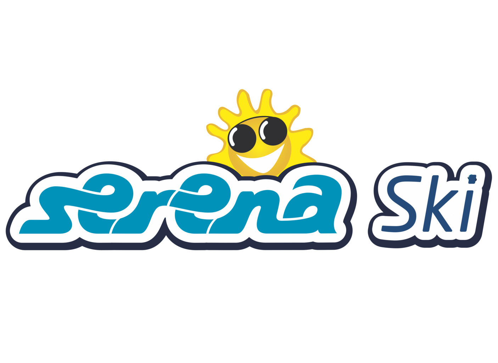
Tulokset Moe SkiTour Talma 17.1.2026
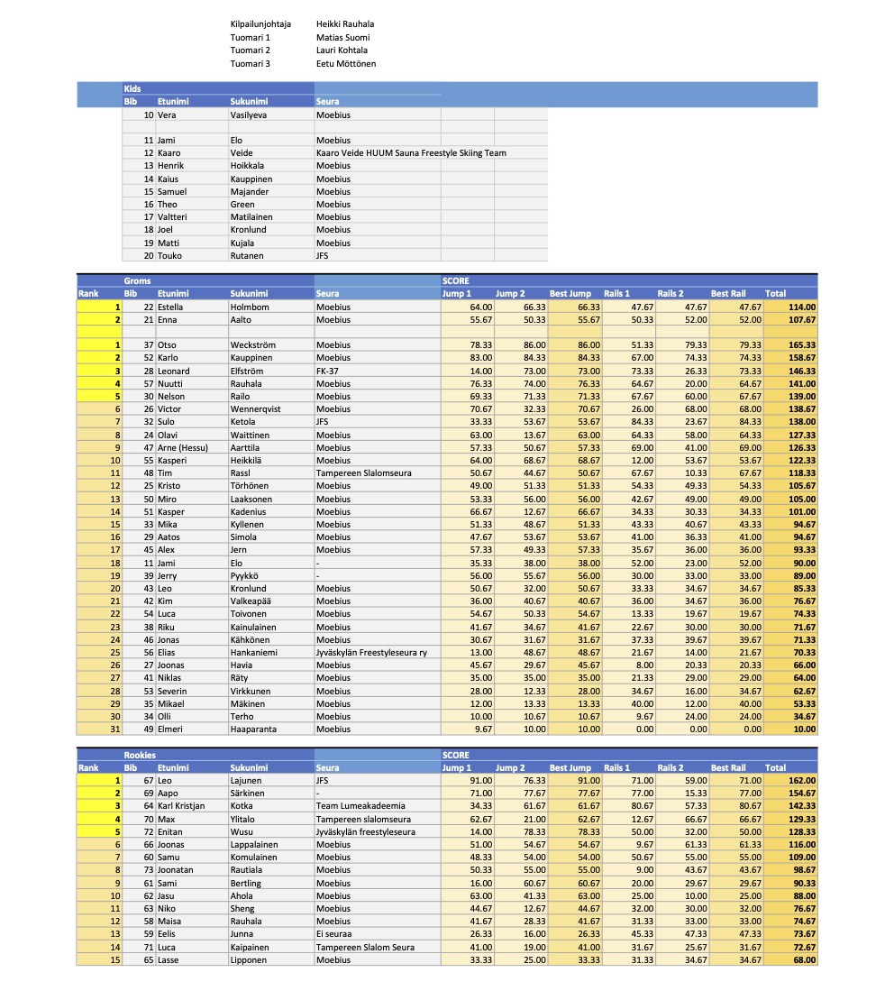
Kilpailukutsu Moe SkiTour Talma 17.1.2026
Tervetuloa Freestyleseura Moebius ry:n Moe SkiTour -kiertueen ensimmäiseen kilpailuun Talma Ski:hin lauantaina 17.1.2026 kello 10 alkaen.
Kilpailu
Lajina on Slopestyle suksilla. Talmassa kilpailu lasketaan Groms, Rookies ja Open-sarjoissa kahdessa osassa:
Kids-luokan kilpailu lasketaan joko popup-parkissa tai takaparkissa jos se ehtii valmistua kisoihin mennessä.
Laskija voi valita suorituspaikat oman taitotasonsa mukaan. Suorituspaikkoja ja hyppyreitä löytyy kaiken tasoisille. Tuomaroitava alue tarkennetaan kilpailijakokouksessa.
Luokat
Tällä kaudella kilpaillaan lajiliiton uuden ikäryhmäjaon mukaan. Ikäryhmät ovat yhdenmukaiset Fearless Finns Freestyle tourin kanssa. Kids tytöt ja -pojat laskevat samassa luokassa, muissa ikäryhmissä on tyttöjen ja poikien luokat.
Kids — 2014 syntyneet ja nuoremmat
Tässä luokassa ei rankingia vaan kaikki saavat tuomareilta kirjallisen palautteen suorituksistaan.
Halutessaan Kids ikäinen saa kilpailla Groms luokassa. Kids luokka lasketaan pienemmässä parkissa kuin muut luokat.
Groms — syntymävuodet 2013 – 2011
Halutessaan nuorempi kuin 2013 syntynyt saa kilpailla tässä luokassa. Fearless Finns kiertueella 2013 tai myöhemmin syntyneen joka osallistuu Groms sarjaan on kilpailtava koko kausi ko. luokassa. Moen kisoissa nuoremmat voivat ilmoittautua kisakohtaisesti.
Rookie — syntymävuodet 2010 – 2008
Open — syntymävuosi 2010 tai aiemmin
Tässä luokassa kilpailevat kaikki FIS-koodi laskijat, jos kilpailu on FIS kilpailu.
2010-2008 syntyneillä on mahdollisuus kilpailla myös Rookie luokassa, mutta silloin he eivät saa FIS
pisteitä.
Ilmoittautuminen
Ilmoittautumiset keskiviikkoon 14.1.2026 mennessä tällä nettilomakkeella
.
Kilpailu on ennakkoon ilmoittautuneille Freestyleseura Moebiusta edustaville seuran jäsenille ilmainen.
Tällä kaudella seuran ulkopuolisille on tarjolla kaikki neljä kilpailua kattava SkiTour-pakettihinta 40 €, tai kisakohtainen ennakkoilmoittautumismaksu 15 €. Jälki-ilmoittautuminen paikan päällä maksaa 25€.
Ilmoittautumismaksut maksetaan Freestyleseura Moebius ry:n tilille
FI09 8000 9710 2213 95
Viestiin “SKITOUR1” tai "KOKO SKITOUR" ja ilmoittautujan nimi.
Moe SkiTourin kisoihin voivat osallistua kaikki lajia harrastavat, osallistuminen ei edellytä seurajäsenyyttä. Tarvitset välineet freestylehiihtoa varten. Kypärä ja selkäpanssari ovat pakollisia. Sauvat eivät ole Moen omissa kisoissa pakolliset, mutta ilman sauvoja laskien saa vähemmän pisteitä.
Tarvitset myös kilpailutilanteen ja parkkilaskun kattavan vakuutuksen, kuten Ski Sport Finlandin Skipassin tai kilpailulisenssin ohessa myytävän Sporttiturva-vakuutuksen. Talman kilpailuun et tarvitse lisenssiä, mutta SkiTour-kiertueella yksi kisoista on kansallisen Fearless Finns -sarjan osakilpailu, johon osallistuaksesi tarvitset Skipassin jos olet 12-vuotias tai nuorempi tai Moebiuksen jäsen, tai kilpailulisenssin.
Kannattaa hankkia vakuutus ja mahdollinen lisenssi nyt kauden alussa! Skipassiin lisättävä sporttiturva vakuutus on hyvin edullinen freeski-vakuutus.
Lisätietoa lisenssivaihtoehdoista Skisport Finlandin sivuilta.
Aikataulusuunnitelma
10.00 numeroliivien jako mutterissa kahvilan terassin vieressä, lipunmyynti ja hissit aukeavat.
Vapaat harjoitukset
10.30 Kilpailijakokous etuparkin hissien ala-asemalla
10.45 Kids-sarja popup-parkissa
11.10 Hypyt: Groms, Rookie & Open
Lounas Suosituksena keittolounas jota on nopeasti tarjolla, mene syömään oman hyppylaskusi jälkeen!
MiniKids palkintojenjako kun muiden sarjojen hypyt on laskettu
13.30 Reilit: Groms, Rookie & Open
16.30 Palkintojenjako etuparkien hissien ala-asemalla
Talkoot
Tarvitsemme kilpailuiden järjestämiseen myös paljon talkooväkeä, talkooväen ilmoittautuminen talkooväen ilmoittautumislomakkeella
.
Hissiliput
Hiihtokeskuksen lipunmyynnistä saat päivälipun numeroliiviä vastaan alennushinnalla.
Hiihtokeskuksessa on käytössä Axess-etäkortti.
Yhteystiedot
Heikki Rauhala, 0407692277, info@moebius.fi, moebius.fi, @moebiusfreestyle, facebook.com/moebiusfreestyle
SkiTour 2026
Moe SkiTour jatkuu keväällä 2026 neljän osakilpailun voimin:
Kilpailuissa kilpaillaan tällä kaudella lajiliiton uuden ikäryhmäjaon mukaan. Ikäryhmät ovat yhdenmukaiset Fearless Finns Freestyle tourin ja muiden pohjoismaiden kilpailujen kanssa.
Kids — 2014 syntyneet ja nuoremmat
Tässä luokassa ei rankingia vaan kaikki saavat tuomareilta kirjallisen palautteen suorituksistaan.
Halutessaan Kids ikäinen saa kilpailla Groms luokassa.
Groms — syntymävuodet 2013 – 2011
Halutessaan nuorempi kuin 2013 syntynyt saa kilpailla tässä luokassa, mutta hänen on silloin kilpailtava
koko kausi ko. luokassa.
Rookie — syntymävuodet 2010 – 2008
Open — syntymävuodet 2010 tai aiemmin
Tässä luokassa kilpailevat kaikki FIS-koodi laskijat, jos kilpailu on FIS kilpailu.
2010-2008 syntyneillä on mahdollisuus kilpailla myös Rookie luokassa, mutta silloin he eivät saa FIS
pisteitä.
Yhteystiedot
Heikki Rauhala, 0407692277, info@moebius.fi, moebius.fi, @moebiusfreestyle
Menneet kaudet
Videoita edellisen kauden SkiTourilta löytyy Moen YouTubesta.
Kauden 2025 SkiTour
Kauden 2024 SkiTour